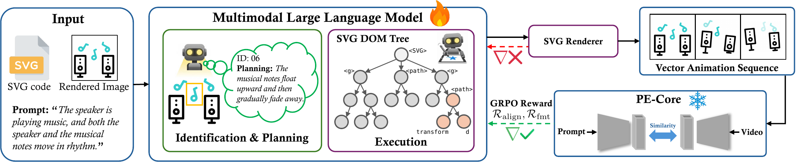
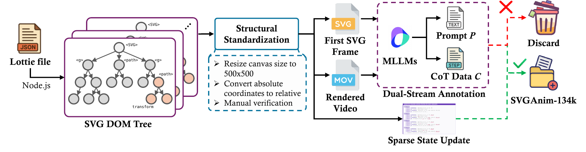
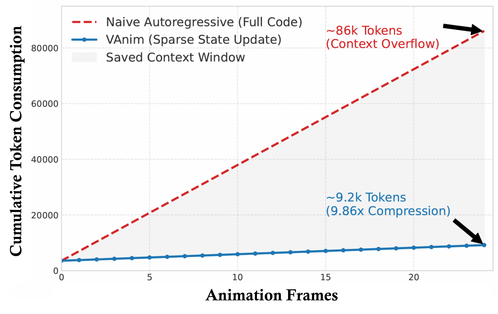
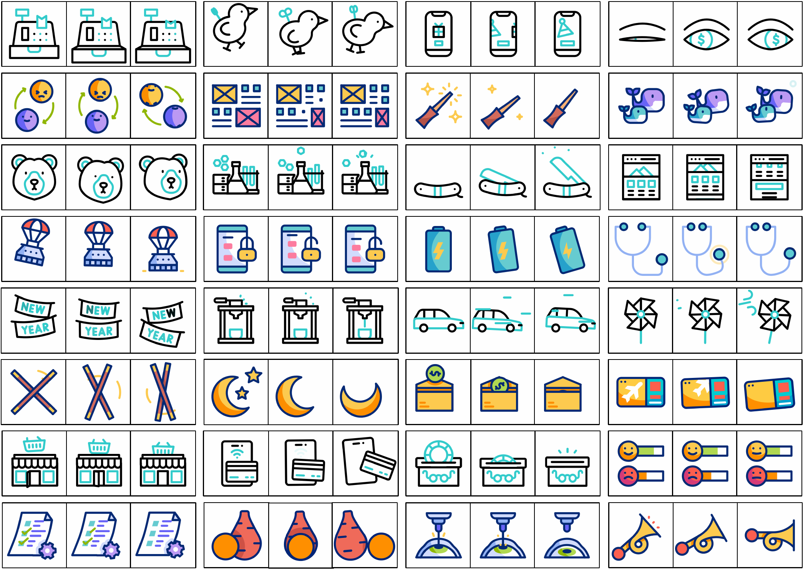
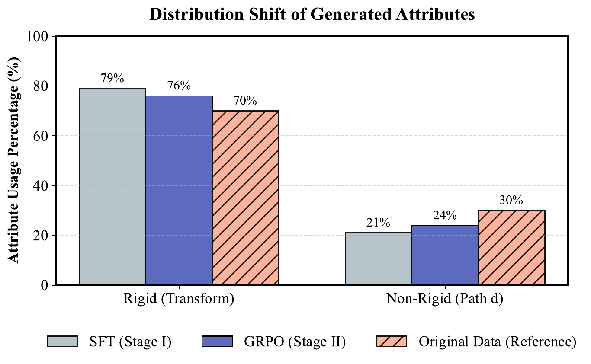
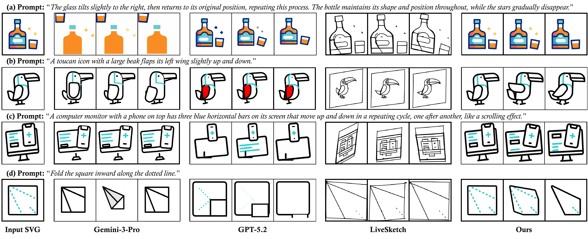
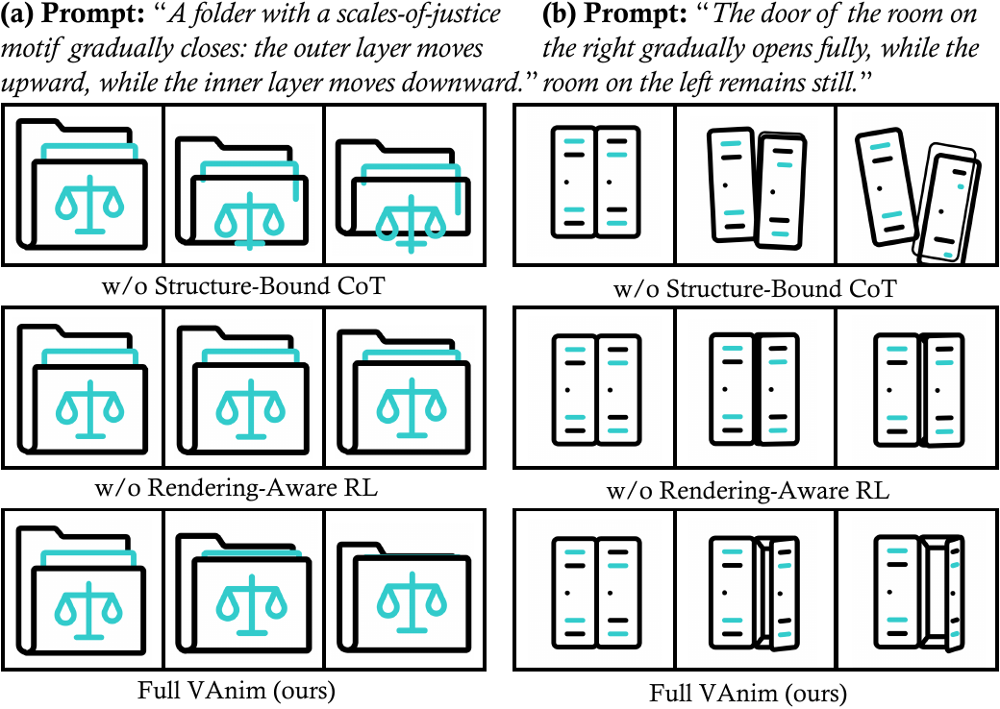

Sparse State Updates on a persistent SVG DOM tree
VAnim predicts differential updates instead of regenerating a full SVG at every step, reducing token length while preserving non-participating elements by construction.
Accepted at ICML 2026
The first LLM-based framework for open-domain text-to-SVG animation, modeling motion as sparse state updates on a persistent SVG DOM tree for stronger identity consistency, structural validity, and geometry-level deformation.
1Beihang University 24Paradigm 3Zhejiang University 4The University of Hong Kong
† Corresponding author
VAnim predicts differential updates instead of regenerating a full SVG at every step, reducing token length while preserving non-participating elements by construction.
The framework supports geometry-level motion and path deformation, unlocking richer vector animation than CSS or SMIL transform-only generation.
The project introduces SVGAnim-134k, the first large-scale vector animation benchmark, and pairs it with a curated on-page case gallery for qualitative inspection.
Abstract
Scalable Vector Graphics animation is valuable because it remains editable, lightweight, and resolution independent, yet it is difficult to generate automatically: the model must bridge discrete SVG code with continuous visual dynamics while preserving topology and identity. VAnim addresses this by representing animation as sparse state updates over a persistent SVG DOM tree, grounding motion through Identification-First Motion Planning, and aligning generation with rendered visual feedback using Rendering-Aware Reinforcement Learning via GRPO.
Contributions
A large-scale benchmark for training and evaluating vector animation models, built from linguistically annotated SVG animation sequences.
Motion planning is explicitly grounded to persistent SVG identities, then executed through sparse updates that retain the original structure by design.
GRPO introduces visual reward feedback so the model can learn code updates that better match the intended motion and semantics after rendering.
Method



Dataset
The benchmark spans UI icons, loading indicators, narrative illustrations, and character dynamics. The resulting distribution contains a substantial share of path-level updates, making the task meaningfully harder than rigid transform animation.


Results


The main gains come from two design decisions: a sparse representation that naturally stabilizes structure, and visual reward feedback that teaches the model to align rendered motion with prompt semantics.
Together, they let VAnim handle long-horizon animation with richer deformation patterns than rigid transform pipelines.
Featured Cases
Full Gallery
Citation
@inproceedings{liang2026vanim,
title={VAnim: Rendering-Aware Sparse State Modeling for Structure-Preserving Vector Animation},
author={Liang, Guotao and Wang, Zhangcheng and Wang, Chuang and Hu, Juncheng and Zhou, Haitao and Liu, Junhua and Zhang, Jing and Xu, Dong and Yu, Qian},
booktitle={Proceedings of the 43rd International Conference on Machine Learning},
year={2026}
}